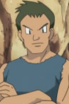
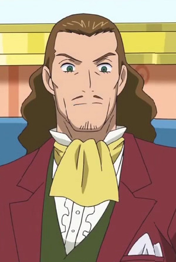
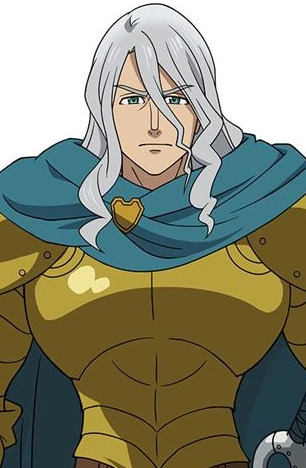

|
Belfangan Clouseau |
- Full Metal Panic! The Second Raid
- Full Metal Panic! The Second Raid OVA
- Full Metal Panic! The Invisible Victory
|
Belfangan Clouseau is an AS pilot and mercenary for Mithril. He and Melissa are old friends through the military. He is an expert matrial artist, easily overpower Kurz Weber, and a capable leader. Belfangan is an anime otaku on his space time. |
|  |
Clayton |
- Pokemon Diamond and Pearl
|
Clayton is a Pokemon Trainer and Pokemon martial artist. He teaches his Pokemon to increase the speed and power of their punches. He and Mr. Mime live in an isolated area in Sinnoh to help them with their training. |
 |
Cullen Calix |
|
Cullen Calix is a Pokemon maturalist who specializes in medicine. He has deep attracts to Luna after meeting her. |
 |
Dr. Proctor |
|
Dr. Proctor is a doctor for humans. He is a womanizer and lazy. He has a little confidence when it comes to treating Pokemon. Once he has engaged, he skilled and competent physician with confidence and compassion. |
 |
Giovanni |
|
Giovanni is the Team Rocket's Boss and the former Viridian City Gym Leader. He is very ambitious man and intolerant of failure. He is very wealthy but Team Rocket has money problems. He rarely meets people in person. |
 |
Jouichirou Yukihira |
- Food Wars!
- Food Wars! The Second Plate
- Food Wars! The Third Plate
- Food Wars! The Third Plate: Totsuki Train Arc
- Food Wars! The Fourth Plate
|
Jouichirou Yukihara is the father of Souma Yukihara. He was a former student of Tootsuki Culinary Academy. He is world famous chef. |
 |
Kiritsugu Emiya |
- Fate/stay Night
- Fate/Zero
- Fate/Zero Season 2
- Fate/Zero Remix
- Fate/kaleid liner Prisma Illya 2wei!
- Fate/stay Night: Unlimited Blade Works 2nd Season
- Fate/stay Night Movie: Heavan's Feel - I. Presage Flower
- Fate/kaleid liner Prisma Illya Movie: Sekka no Chikai
|
Kiritsugu Emiya is Shirou Emiya's foster father and the master of Saber. He is not known as Magus Killer. His does not believes in sacrifice. |
|  |
King |
|
The King is Jeffrey's father. He cares for his son more than anything. |
 |
Shinigami |
|
Shinigami or Lord Death is the grim reaper and headmaster of DWMA. He is the most powerful meister. He has a playful attitude. He has a benevolent and easygoing nature. Death is kind and wise yet optimistic figure. |
|  |
Zaratras |
- The Seven Deadly Sins
- The Seven Deadly Sins: Revival of The Commandments
|
Zaratras was a Great Holy Knight and was once the strongest in the order of Liones' Holy Knight. He is the father of Holy Knight, Gilthunder. He is a kind and refine man and believes in Seven Deadly Sins. |